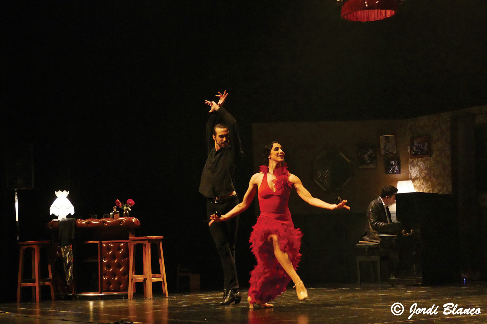
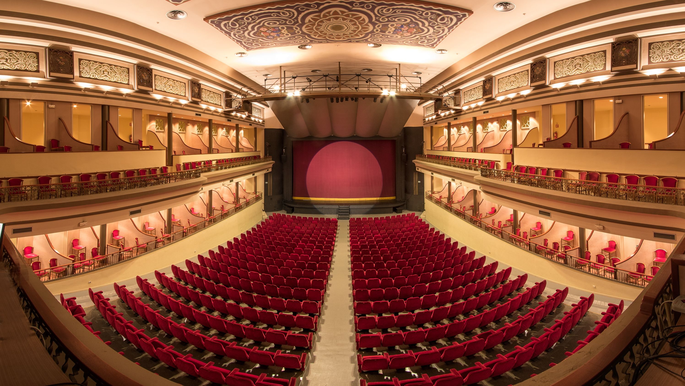
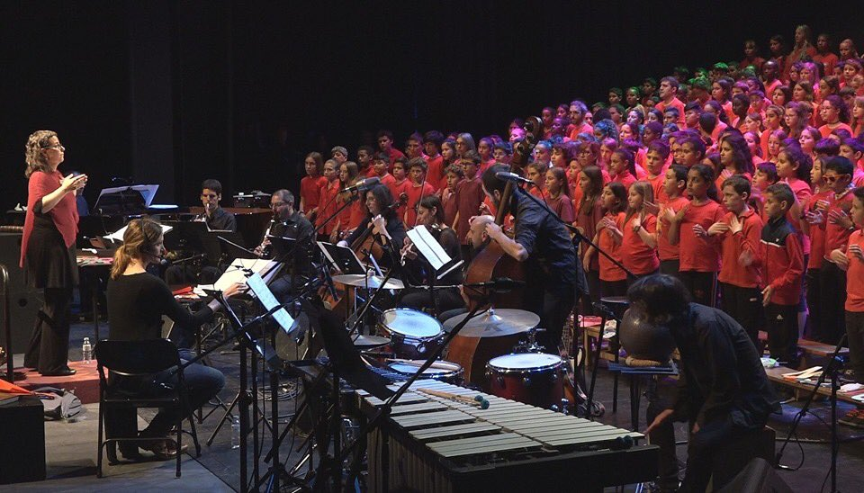

20
19

L’escenari
Què és Figueres a Escena?
Figueres a Escena és el projecte d’arts escèniques i musicals de l’Ajuntament de Figueres, que coordina la programació del Teatre Municipal el Jardí, la sala La Cate i l’Auditori Caputxins, juntament amb la d’entitats i empreses culturals de la ciutat.
Sota aquest paraigua, es dona visibilitat al Talent KM.0, es faciliten espais de creació a les companyies locals i s’impulsen activitats paral·leles i projectes educatius per oferir una experiència cultural més rica i arrelada al territori.
A més, Figueres a Escena treballa per garantir l’accés a la cultura per a tothom a través de programes d’accessibilitat, col·laboració amb Apropa Cultura i diversos descomptes.
Espais

Teatre Municipal el Jardí
El Teatre El Jardí és un dels espais més emblemàtics de Figueres. Es va inaugurar el 29 d’abril de 1916, durant les Fires i Festes de la Santa Creu, amb l’òpera La Gioconda del Liceu de Barcelona. L’empresari Pau Pagès en va impulsar la construcció a l’actual plaça Josep Pla, i ben aviat es va convertir en el centre cultural més actiu de la ciutat, combinant teatre, òpera, sarsuela i cinema.
Després d’una gran reforma a finals dels vuitanta, el teatre va reobrir el 1991 amb un aforament renovat i millors instal·lacions. Avui El Jardí, amb més de 900 localitats, continua sent un referent cultural i punt de trobada per als amants de les arts escèniques a Figueres. L’any 1983 l’Ajuntament va adquirir l’edifici i el va transformar en el
teatre municipal, obrint una nova etapa amb una programació estable. El primer espectacle va ser El cafè de la Marina, i des de llavors hi han passat companyies com El Tricicle, Dagoll Dagom o Els Joglars.
Projectes educatius
L’Ajuntament de Figueres, juntament amb entitats del territori, impulsa diversos programes per apropar les arts escèniques i musicals a infants i joves d’infantil, primària i secundària.
El programa es completa amb iniciatives com el projecte Planters de ConArte Internacional, que integra música i dansa en el dia a dia de centres amb alta diversitat cultural, i el Torneig de Dramatúrgia per a Instituts, que anima l’alumnat a crear i defensar els seus propis textos teatrals damunt l’escenari.
Cada curs es programen funcions de teatre i audicions escolars amb dossiers pedagògics i, en el cas de secundària, col·loquis post-funció amb les companyies. Iniciatives com la UAP! i la Cantània fomenten el cant col·lectiu i els valors de pau i convivència a través de grans cantates participatives.
Projectes com Mapadeball/Tots Dansen introdueixen la dansa contemporània als instituts amb formació per al professorat i creació de coreografies pròpies, sovint coordinades a la ciutat per l’associació Agitart. Paral·lelament, l’Aula de Teatre ofereix tallers a escoles, activitats extraescolars i classes obertes al Teatre Municipal El Jardí per a totes les edats, incloent-hi projectes específics per a col·lectius amb necessitats especials.

Galeria fotogràfica
20
20
20
21